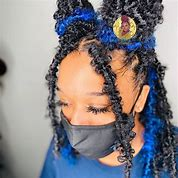
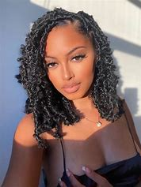
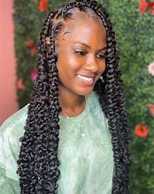
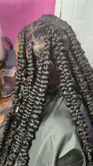
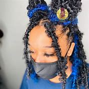
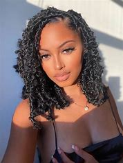
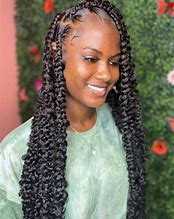
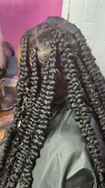

Wether it ts just plain braids pulled with a croche pen or its pulled before hand it will still have the same effect.It will leave you looking breath taking without so much effort if left loose and hanging.
it will cost You R150+R10 for Pattern of choice (R5 pattern+R5 Product Use)


 






